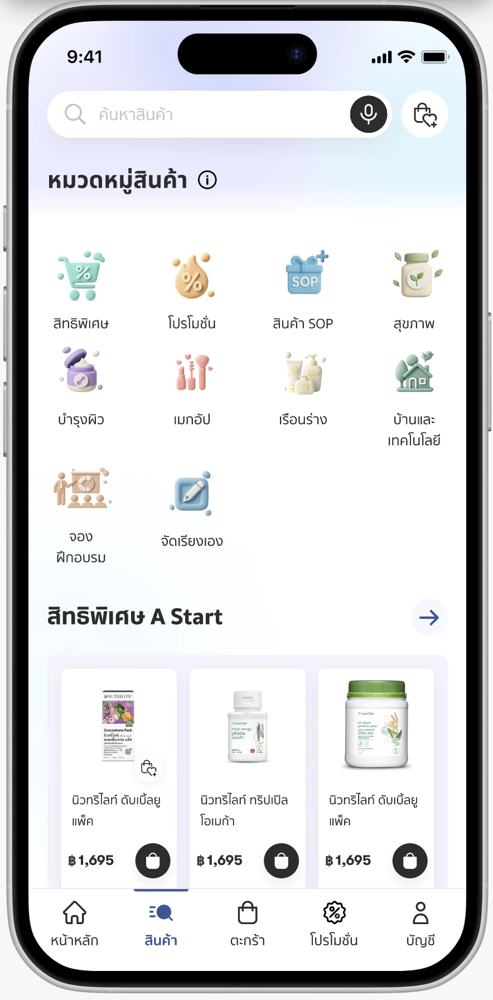
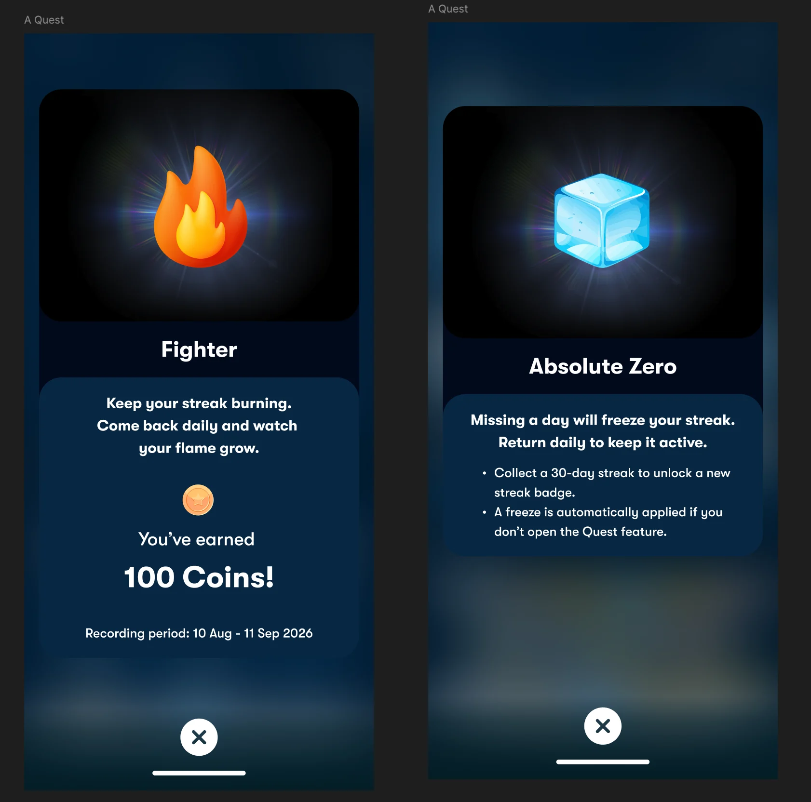
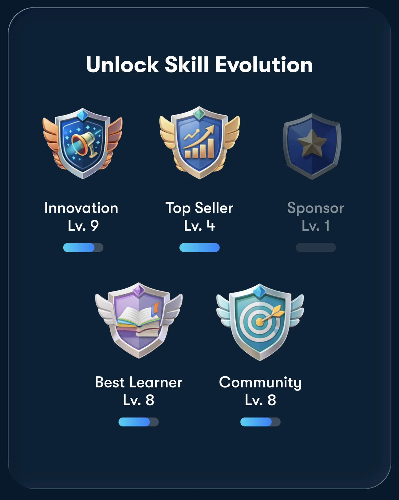
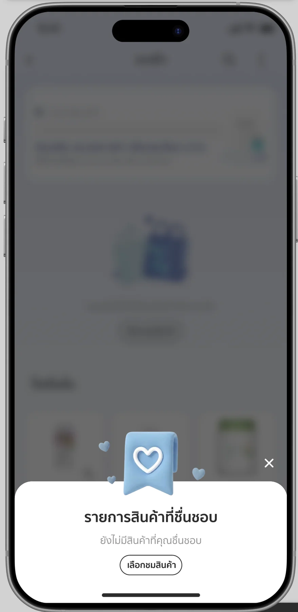
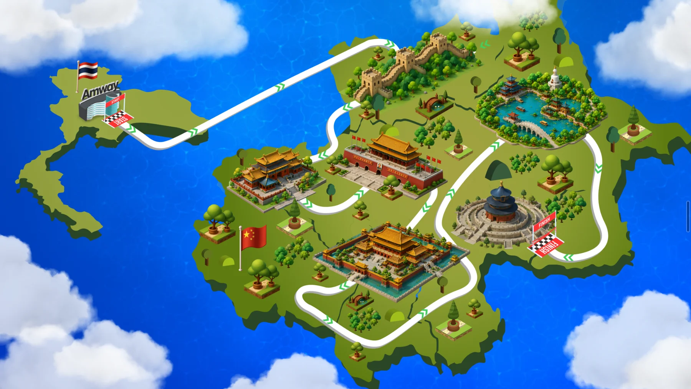
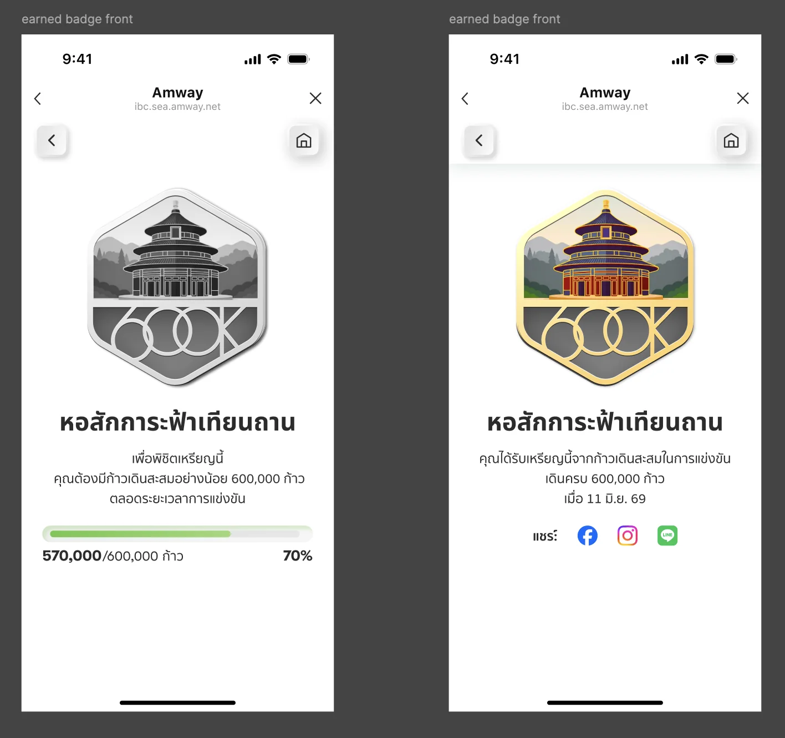
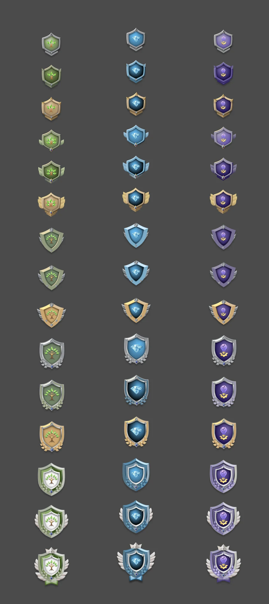

UI DESIGN · ART DIRECTION · AI-ASSISTED VISUALS
Creative ideas.
Faster exploration.
Bringing characters, icons and rewarding moments into everyday application experiences.
I combine UI design with AI-assisted image creation to explore visual ideas faster and give digital experiences a distinctive personality. My role connects creative direction, image selection and refinement, and interface composition — turning generated assets into a cohesive part of the product.
HOW I WORK WITH AI
From visual possibility
to purposeful UI.
Set the direction
Define the screen’s purpose, visual tone and the role of each character or icon.
Explore with AI
Use AI-assisted image creation to try creative directions and develop visual assets faster.
Select & refine
Curate imagery for style, clarity and relevance to the application experience.
Compose the interface
Bring assets into layouts with considered hierarchy, spacing, typography and interaction states.
01 / SIGN IN & SIGN UP
A welcoming first impression.
Designed authentication screens that combine clear form hierarchy with friendly character illustrations. AI-assisted imagery adds personality to the welcome and account creation experience, while the layout keeps the next action easy to find.

02 / COMMERCE & CATEGORY ICONS
Small icons. A richer visual language.
Created a playful visual direction for product categories, using AI-assisted icons and integrating them with labels, product cards and navigation. The wider UI scope spans promotion and cart experiences, with visual assets composed around practical shopping tasks.

03 / A QUEST · STREAKS & REWARDS
Make progress feel rewarding.
Combined expressive fire, ice and coin imagery with reward messaging to communicate active streaks, frozen progress and earned rewards. The visual treatment gives application states a distinct personality while keeping the message and action prominent.

04 / A QUEST · ACHIEVEMENT BADGES
Turn milestones into collectibles.
Designed an achievement presentation with illustrated badges, skill names, levels and progress indicators. AI-assisted visual exploration helped develop a family of distinctive rewards that fit the application’s gamification direction.

05 / COMMERCE · FAVORITES
An empty state with personality.
A soft 3D bookmark illustration adds warmth to the favorites sheet. The UI pairs a clear empty-state message with a direct action to browse products.

06 / GAMIFICATION · VISUAL WORLD
A journey worth exploring.
Composed an illustrated journey map with dimensional landmarks, routes and destination markers. AI-assisted visual assets help build a playful setting and give the experience a distinctive sense of place.

07 / ACHIEVEMENT · BADGE UI
From progress to a proud milestone.
Designed landmark-inspired achievement badges and their interface states. Silver and gold treatments distinguish progress from an earned reward, supported by progress information and sharing actions.

08 / A QUEST · SKILL ICON & BADGE DESIGN
A visual language
for growing skills.
Developed a family of skill badges with distinct tree, diamond and lightbulb symbols. Color, metallic finishes, wings and decorative frames create a progression of visual tiers while preserving a recognizable identity for each skill. The work combines AI-assisted visual exploration with icon selection and composition for the application’s reward system.
